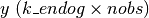

statsmodels.tsa.statespace.kalman_filter.KalmanFilter¶
-
class
statsmodels.tsa.statespace.kalman_filter.KalmanFilter(k_endog, k_states, k_posdef=None, loglikelihood_burn=0, tolerance=1e-19, results_class=None, **kwargs)[source]¶ State space representation of a time series process, with Kalman filter
Parameters: k_endog : array_like or integer
The observed time-series process
 if array like or the
number of variables in the process if an integer.
if array like or the
number of variables in the process if an integer.k_states : int
The dimension of the unobserved state process.
k_posdef : int, optional
The dimension of a guaranteed positive definite covariance matrix describing the shocks in the measurement equation. Must be less than or equal to k_states. Default is k_states.
loglikelihood_burn : int, optional
The number of initial periods during which the loglikelihood is not recorded. Default is 0.
tolerance : float, optional
The tolerance at which the Kalman filter determines convergence to steady-state. Default is 1e-19.
results_class : class, optional
Default results class to use to save filtering output. Default is FilterResults. If specified, class must extend from FilterResults.
**kwargs
Keyword arguments may be used to provide values for the filter, inversion, and stability methods. See set_filter_method, set_inversion_method, and set_stability_method. Keyword arguments may be used to provide default values for state space matrices. See Representation for more details.
Notes
There are several types of options available for controlling the Kalman filter operation. All options are internally held as bitmasks, but can be manipulated by setting class attributes, which act like boolean flags. For more information, see the set_* class method documentation. The options are:
- filter_method
- The filtering method controls aspects of which Kalman filtering approach will be used.
- inversion_method
- The Kalman filter may contain one matrix inversion: that of the forecast error covariance matrix. The inversion method controls how and if that inverse is performed.
- stability_method
- The Kalman filter is a recursive algorithm that may in some cases suffer issues with numerical stability. The stability method controls what, if any, measures are taken to promote stability.
- conserve_memory
- By default, the Kalman filter computes a number of intermediate matrices at each iteration. The memory conservation options control which of those matrices are stored.
The filter_method and inversion_method options intentionally allow the possibility that multiple methods will be indicated. In the case that multiple methods are selected, the underlying Kalman filter will attempt to select the optional method given the input data.
For example, it may be that INVERT_UNIVARIATE and SOLVE_CHOLESKY are indicated (this is in fact the default case). In this case, if the endogenous vector is 1-dimensional (k_endog = 1), then INVERT_UNIVARIATE is used and inversion reduces to simple division, and if it has a larger dimension, the Cholesky decomposition along with linear solving (rather than explicit matrix inversion) is used. If only SOLVE_CHOLESKY had been set, then the Cholesky decomposition method would always be used, even in the case of 1-dimensional data.
Attributes
dtype(dtype) Datatype of currently active representation matrices obs(array) Observation vector:  prefix(str) BLAS prefix of currently active representation matrices time_invariant(bool) Whether or not currently active representation matrices are design endog obs_cov obs_intercept selection state_cov state_intercept transition Methods
bind(endog)Bind data to the statespace representation filter([filter_method, inversion_method, ...])Apply the Kalman filter to the statespace model. impulse_responses([steps, impulse, ...])Impulse response function initialize_approximate_diffuse([variance])Initialize the statespace model with approximate diffuse values. initialize_known(initial_state, ...)Initialize the statespace model with known distribution for initial state. initialize_stationary()Initialize the statespace model as stationary. loglike([loglikelihood_burn])Calculate the loglikelihood associated with the statespace model. loglikeobs([loglikelihood_burn])Calculate the loglikelihood for each observation associated with the statespace model. set_conserve_memory([conserve_memory])Set the memory conservation method set_filter_method([filter_method])Set the filtering method set_inversion_method([inversion_method])Set the inversion method set_stability_method([stability_method])Set the numerical stability method simulate(nsimulations[, measurement_shocks, ...])Simulate a new time series following the state space model Methods
bind(endog)Bind data to the statespace representation filter([filter_method, inversion_method, ...])Apply the Kalman filter to the statespace model. impulse_responses([steps, impulse, ...])Impulse response function initialize_approximate_diffuse([variance])Initialize the statespace model with approximate diffuse values. initialize_known(initial_state, ...)Initialize the statespace model with known distribution for initial state. initialize_stationary()Initialize the statespace model as stationary. loglike([loglikelihood_burn])Calculate the loglikelihood associated with the statespace model. loglikeobs([loglikelihood_burn])Calculate the loglikelihood for each observation associated with the statespace model. set_conserve_memory([conserve_memory])Set the memory conservation method set_filter_method([filter_method])Set the filtering method set_inversion_method([inversion_method])Set the inversion method set_stability_method([stability_method])Set the numerical stability method simulate(nsimulations[, measurement_shocks, ...])Simulate a new time series following the state space model Attributes
conserve_memory(int) Memory conservation bitmask. designdtype(dtype) Datatype of currently active representation matrices endogfilter_conventional(bool) Flag for conventional Kalman filtering. filter_method(int) Filtering method bitmask. filter_methodsinversion_method(int) Inversion method bitmask. inversion_methodsinvert_cholesky(bool) Flag for Cholesky inversion method. invert_lu(bool) Flag for LU inversion method. invert_univariate(bool) Flag for univariate inversion method (recommended). memory_conserve(bool) Flag to conserve the maximum amount of memory. memory_no_filtered(bool) Flag to prevent storing filtered state and covariance matrices. memory_no_forecast(bool) Flag to prevent storing forecasts. memory_no_likelihood(bool) Flag to prevent storing likelihood values for each observation. memory_no_predicted(bool) Flag to prevent storing predicted state and covariance matrices. memory_optionsmemory_store_all(bool) Flag for storing all intermediate results in memory (default). obs(array) Observation vector: obs_covobs_interceptprefix(str) BLAS prefix of currently active representation matrices selectionsolve_cholesky(bool) Flag for Cholesky and linear solver inversion method (recommended). solve_lu(bool) Flag for LU and linear solver inversion method. stability_force_symmetry(bool) Flag for enforcing covariance matrix symmetry stability_method(int) Stability method bitmask. stability_methodsstate_covstate_intercepttime_invariant(bool) Whether or not currently active representation matrices are transition